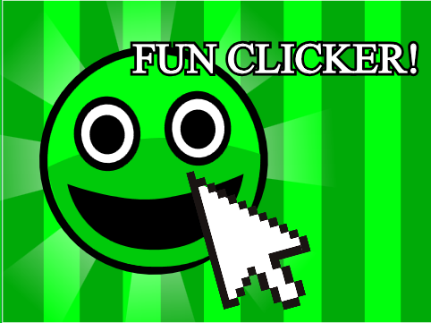
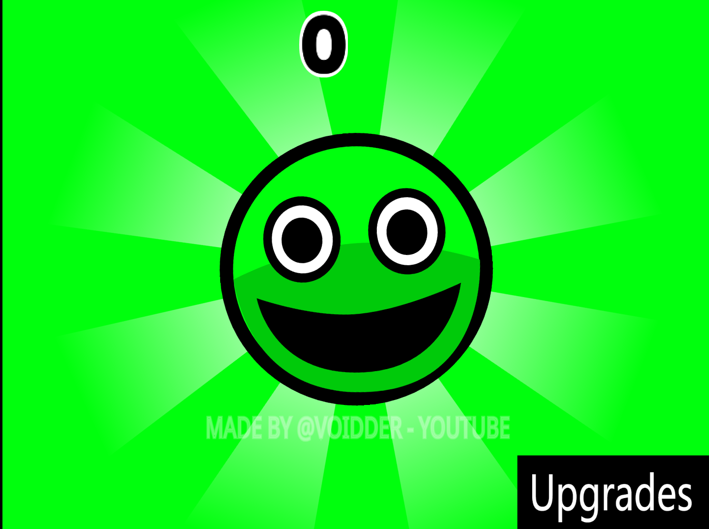
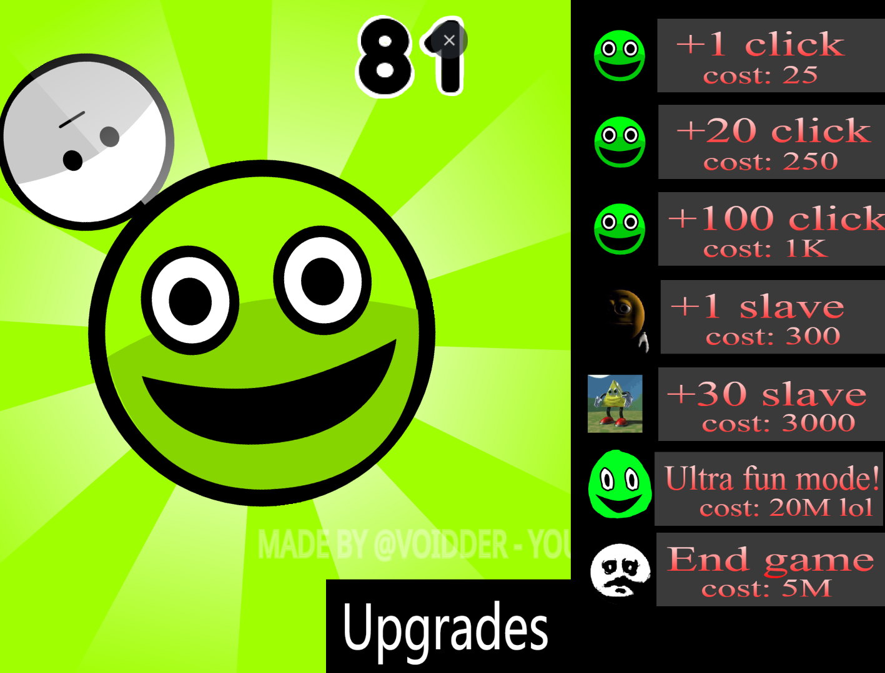

An pretty 'normal' clicker game
Fun Clicker is an Horror game created by Voidder where you need to click the green 'happy' guy, everything is so fun, or is it?



The game is created on Scratch
The game has so many secrets, go find them all
WIP